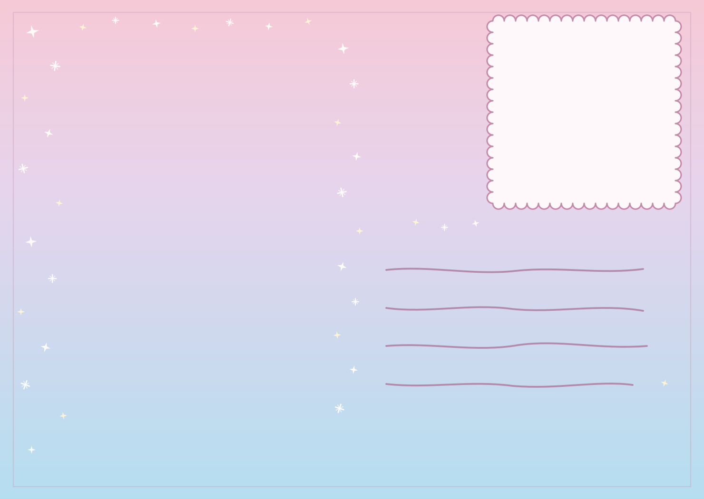

Bay 01
Kaarten
Recto en verso van de reiskaart, opgesteld als een studiovoorstelling. Correspondentie gemaakt om te schrijven, te geven en te archiveren.

Het Papieren Atelier · Capsulecollectie
Kleine dingen, grote magie.
Een volledig papieratelier, gecatalogiseerd: correspondentie, stickers, posters, gebonden werk, kalenders, textielpattern, aandenkens en branding in opdracht voor andere huizen.
Bay 01
Recto en verso van de reiskaart, opgesteld als een studiovoorstelling. Correspondentie gemaakt om te schrijven, te geven en te archiveren.

Bay 02
Een stickercapsule: een A6-plaat van de kraam onder het bietenmerk, gepaard met een volledig art-directed vel. Klik op een stuk om de plaat te openen.
A6-print
stickervel
Kleine winkeldingetjes
peel & play
Bay 03
Drie nummers, één tafel. Een postertriptiek als waaier, als een kioskeditie. Klik op een cover om het nummer te openen.
Bay 04
Omslagen en binnenplaten voor notitieboeken, journals, agenda's, correspondentiekaarten en de wandkalender. Gebonden werk voor dagelijks gebruik.
Bay 05
Oppervlaktedesign los van de pagina op stof, tassen, kleding en schoenen op maat, met een kleurverhaal uit de Night Garden-studie.
Kleurinspiratie
Bay 06
Een stad en een atelier, gebonden als spiraalnotitieboeken en weekagenda's: alleen coverart, zonder datums, uit ontwerp.
Bay 07
Illustratie in opdracht voor packaging: een snackzak rond het motief Sailor & Mermaids.
Bay 08
Characterstudies voor kaarten en merch: tassen, kleding en aandenkens om vast te houden, niet alleen te bekijken.